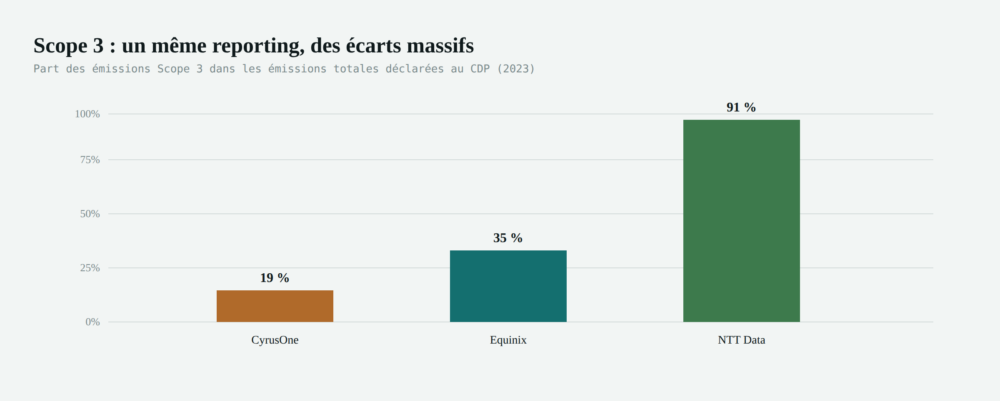

Les data centers pèsent de plus en plus lourd sur le climat — mais la manière dont on mesure ce poids reste largement approximative.
L'IA et le cloud poussent la demande électrique des data centers vers un mur — et personne ne mesure vraiment ce que ça coûte à la planète.
Directive UE 2024 (Energy Efficiency Directive) : reporting énergie/émissions obligatoire, neutralité visée en 2030.
Pour les achats et biens d'équipement, 4 méthodes existent, de la plus précise à la plus grossière :

L'analyse de cycle de vie (ACV/LCA) peut-elle mesurer les émissions carbone avec plus de justesse — et révéler les impacts environnementaux invisibles aux méthodes classiques ?